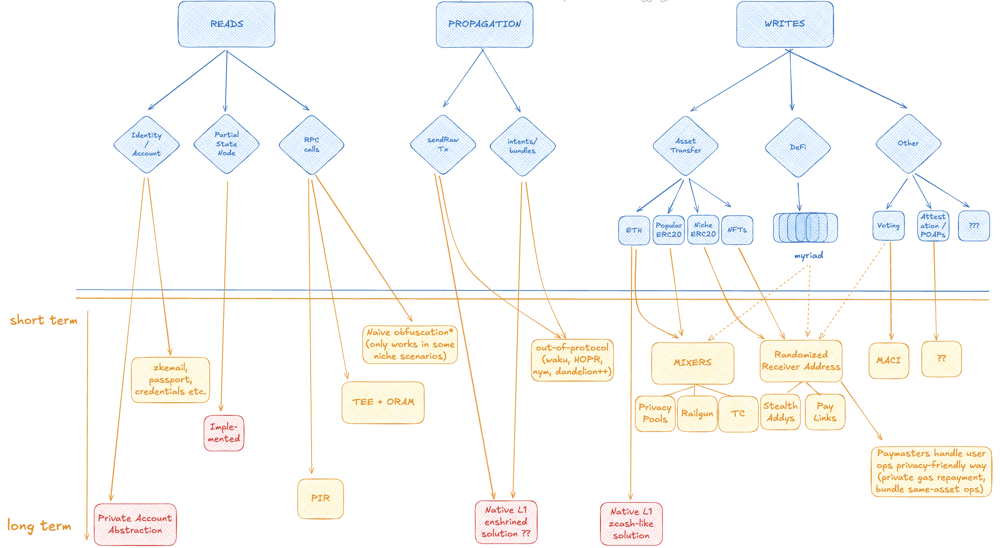

Table of Contents
-
Diagram of onchain privacy problem and solution space. High Level.
-
Goals for the medium term: what is the desired state for wallet privacy features? Just a sketch.
-
Phase 1 plan for first bundle of privacy features to prepare and spec. More detailed.
Diagram
We split the onchain privacy problem space into three basic categories:
- Reads (reading data from the chain)
- Writes (data that actually gets written onchain)
- Propagation (sending data to be written onchain)

key: blue=problems, orange=solutions, red=L1 delivered solutions
for HIGHER RESOLUTION diagram click here
Goals
This document outlines the medium-term goals for the Wallet SDK and Example Wallet (integrating the SDK) from a privacy perspective. The goal is to design towards a robust, user-friendly privacy UX.
The SDK and wallet aim to introduce a chain-agnostic, privacy-first standard for Ethereum self-custody wallets. Defining this "ideal" privacy UX early helps us make sure the short-term roadmap of privacy features aligns with the longer-term privacy goals.
0. Root Identity and Key Management
0.1 Everything Derives From a Seed Phrase
The wallet is fully derived from a single BIP-32/BIP-39 seed phrase. From it, users generate User Accounts--chain-aware, multi-credential identity namespaces, not simply 1 keypair == 1 identity.
Each User Account derives the following on every chain:
- Canonical Public Address
(e.g.bob.eth@arb→ Arbitrum address controlled by the account) - Stealth Meta Address
(e.g. a mapping btwnbob.eth@arbpublic address to an SMA, set on the Arbitrum ERC-6538 registry contract) - Mixer Credentials
(for Railgun, Privacy Pools, and Tornado. Credentials for all these protocols need a standard way to be generated from keys on the HD wallet. Likely this will only/mostly be on mainnet.) - Ephemeral Address Credentials
(one-time keypairs for DeFi or payment links, a standard way of generating the "next" one)
Users explicitly "initializes" the different chains per account to scope where they operate. You can alsways "initialize" a new chain if you want to be able to interact there with your User Account.
0.2 ERCification: Shared Standard to Unroll Seed Phrase
The particulars of this seed-based model should be formalized via one or more ERCs. Any wallet client following the spec should be able to recover the full state from the seed: stealth mappings, mixer funds, and address-scattered balances. This supports interoperability and disaster recovery.
1. Write UX: Maximize Private Actions by Default
Privacy should be the default. Public linkability to Canonical Public Address(es) of the User Account should always be opt-in.
1.1 Proactive Mixing of Fund Balances
- As many tokens as possible should have active/healthy mixer pool support (especially on mainnet).
- Tokens with active mixer pools should ideally always be mixed by default.
- Users can auto-mix by preference (e.g., "always mix 50% of ETH") or manually trigger mixing.
- Mixed assets become
pTokens(e.g., pETH, pDAI) after a delay. - The SDK must support all major mixers (Privacy Pools, Railgun, Tornado). We want as close to feature parity across these different mixer solutions as possible.
1.2 Privacy of Fund Transfers
-
Receiving:
- During wallet sends if
bob.eth@chaindesired recipient has an ERC-6538 registry entry, stealth address is used automatically. - If
bob.eth@chainwants to generate a payment link to give to a sender, this will be for a fresh ephemeral address (not bob's canonical public address). - Whether
bob.eth@chainreceives ASSET to an ephemeral address, a stealth address, or canonical public address bob sees one aggregated ASSET user balance. If bob receives directly into a mixer pool bob sees that he received pASSET.
- During wallet sends if
-
Sending:
- If private funds (e.g., pETH) exist, they're used by default.
- If not, user is alerted the send won't be private, and optionally prompted to mix first.
- Sends to other users ideally preserve privacy on both ends, including automatic remixing post-receipt. This private send (from mixer) to private receiver (back to mixer) should be implemented for all the mixer solutions (Privacy Pools, Railgun, Tornado).
1.3 Private DeFi / Dapp Interactions
- If private balances cover the action, wallet moves assets from mixer to a fresh ephemeral address to interact with the Dapp. This is our way of doing "generic private defi interactions"
- Ideally, all addresses (except canonical public) are one-time-use (or two-time-use if deposit, wait, withdraw)
- Example: swap 10 of 23 DAI in an address for ETH. Output ETH goes to fresh address; change (13 DAI) goes to another fresh address. The original address holding 23 DAI was one-time-use and can now be discarded.
- Gas for relayed ops should be paid with pETH or in-operation value.
1.4 Chain- and Address-Agnostic Authorization
- Users authorize interactions once, not per-address.
- Wallet handles all bridging, EIP-7702 upgrades, routing, relays.
- UX remains legible for advanced users, but defaults to minimal click flow.
1.5 Privacy-Aware Relayers and Paymasters
- Prefer paying relayers/paymasters with private funds (e.g., pETH).
- Long-term: enable SNARK aggregation of repayment flows for further obfuscation.
- Should align with ERC-4337 and avoid proprietary/custom relaying infra.
1.6 Privacy Legibility
To reduce complexity, apply an “all-or-nothing” visibility strategy:
- Mixed assets (pETH, pDAI) are clearly marked as “Private”.
- Unlinked assets (stealth/ephemeral) are not marked as private.
- Only funds inside or directly out of a mixer are considered private.
1.7 Unified, Privacy-Aware Balances
- All chain/ephemeral/stealth balances of a token are shown as a single number.
- Mixed assets are displayed separately (e.g.,
DAI,pDAI). - Users can inspect exact address/chain info, but aren’t required to.
2. Read UX: Private Chain Access
2.1 Private Reads from the Chain
Wallets should avoid leaking interest in addresses or contracts.
- Short-term: use TEE + ORAM RPC technique.
- Long-term: support PIR or make on-device light clients and partial state nodes a reality.
2.2 Minimize Centralized APIs
Third-party APIs should be avoided or minimized. May sound easy in theory but in practice there are a lot of little conveniences (like token prices and logs etc.) that usually rely on third party APIs that need to be thought through.
3. Propagation UX: Private Broadcasting
3.1 Private Transaction Propagation
Transactions or intents must be broadcast without revealing IP or user metadata.
- Ideal: L1-native propagation privacy.
- Short-term: out-of-protocol tools (Waku, Nym, Dandelion++, HOPR).